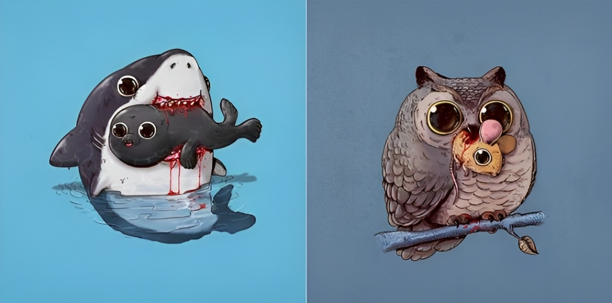

The main point of this page: Isn't this shark cute?
I am the first to support
the cuteness of this shark.
I am the second to support
the cuteness of this shark.
The other main point that is only slightly less main than the first main point of this page: Aren't the
seal and mouse cute?
Side note:
each grid item is 25 rgb less than the last. Also, you may notice that I didn't include the owl in what
was cute. This is because I don't find owls as cute as sharks, seals, and mice. But another reason might
be that the owl looks like it's in the process of tripping many spherical objects after it touched just
a little too much grass.